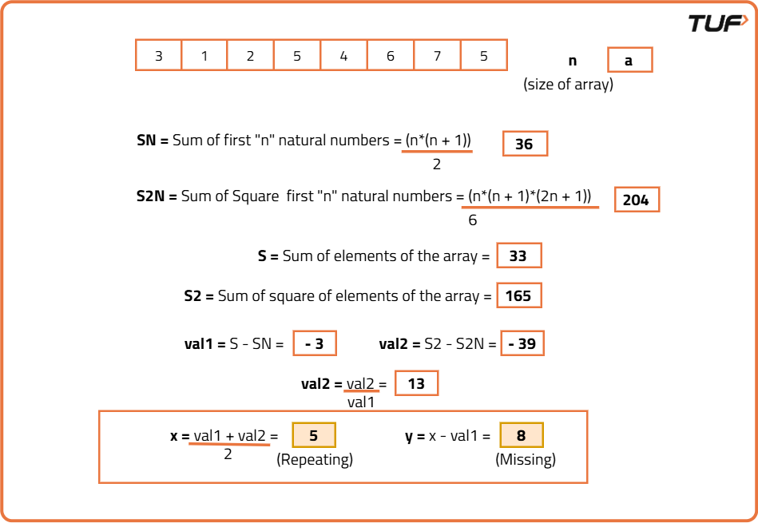

Find the repeating and missing numbers
Problem Statement:
Given an integer array nums of size n containing values from [1, n] and each value appears exactly once in the array, except for A, which appears twice and B which is missing.
Return the values A and B, as an array of size 2, where A appears in the 0-th index and B in the 1st index.
Note: You are not allowed to modify the original array.
Examples
Example 1: Input: nums = [3, 5, 4, 1, 1] Output: [1, 2] Explanation: 1 appears twice in the array, and 2 is missing from the array. So the output is [1, 2]. Example 2: Input: nums = [1, 2, 3, 6, 7, 5, 7] Output: [7, 4] Explanation: 7 appears twice in the array, and 4 is missing from the array. So the output is [7, 4].
Disclaimer: Here is the practice link to help you assess your knowledge better. It's highly recommend trying to solve it before looking at the solution.
Brute Force
Algorithm
- Iterate through the array from index 1 to N, where N is the size of the array.
- For each integer, i, use linear search to count its occurrence in the given array.
- If an element has an occurrence of 2, store it as a candidate element.
- If an element has an occurrence of 0, store it as another candidate element.
- Finally, return the two elements that have occurrences of 2 and 0, respectively.
Code
#include <bits/stdc++.h>
using namespace std;
class Solution {
public:
// Function to find repeating and missing numbers
vector<int> findMissingRepeatingNumbers(vector<int>& nums) {
// Size of the array
int n = nums.size();
int repeating = -1, missing = -1;
// Find the repeating and missing number:
for (int i = 1; i <= n; i++) {
// Count the occurrences:
int cnt = 0;
for (int j = 0; j < n; j++) {
if (nums[j] == i) cnt++;
}
// Check if i is repeating or missing
if (cnt == 2) repeating = i;
else if (cnt == 0) missing = i;
/* If both repeating and missing
are found, break out of loop*/
if (repeating != -1 && missing != -1)
break;
}
// Return {repeating, missing}
return {repeating, missing};
}
};
int main() {
vector<int> nums = {3, 1, 2, 5, 4, 6, 7, 5};
// Create an instance of Solution class
Solution sol;
vector<int> result = sol.findMissingRepeatingNumbers(nums);
// Print the repeating and missing numbers found
cout << "The repeating and missing numbers are: {" << result[0] << ", " << result[1] << "}\n";
return 0;
}
Complexity Analysis
Time Complexity: O(N2), where N is the size of the array. This is because we are iterating through the array for each integer from 1 to N, leading to a nested loop.
Space Complexity: O(1), as we are using a constant amount of space for the variables `repeating` and `missing`, regardless of the input size.
Better Approach
Algorithm
- Declare a hash array of size
N+1whereNis the range of numbers in the array (from 1 to N). This hash array will store the frequency of each element. - Iterate through the given array and for each element encountered, update the frequency in the hash array.
- Once all elements are processed, iterate through the hash array and identify the two elements: one with frequency 2 and one with frequency 0.
- Return the two elements that have frequencies of 2 and 0, respectively.
Code
#include <bits/stdc++.h>
using namespace std;
class Solution {
public:
// Function to find repeating and missing numbers
vector<int> findMissingRepeatingNumbers(vector<int>& nums) {
// Size of the array
int n = nums.size();
// Hash array to count occurrences
int hash[n + 1] = {0};
// Update the hash array:
for (int i = 0; i < n; i++) {
hash[nums[i]]++;
}
int repeating = -1, missing = -1;
// Find the repeating and missing number:
for (int i = 1; i <= n; i++) {
if (hash[i] == 2) {
repeating = i;
} else if (hash[i] == 0) {
missing = i;
}
/* If both repeating and missing
are found, break out of loop*/
if (repeating != -1 && missing != -1) {
break;
}
}
// Return {repeating, missing}
return {repeating, missing};
}
};
int main() {
vector<int> nums = {3, 1, 2, 5, 4, 6, 7, 5};
// Create an instance of Solution class
Solution sol;
vector<int> result = sol.findMissingRepeatingNumbers(nums);
// Print the repeating and missing numbers found
cout << "The repeating and missing numbers are: {" << result[0] << ", " << result[1] << "}\n";
return 0;
}
Complexity Analysis
Time Complexity: O(2*N), where N is the size of the array. This is because we are iterating through the array once to build the hash array and then iterating through the hash array to find the repeating and missing numbers.
Space Complexity: O(N), as we are using an additional hash array of size N+1 to store the frequency of each element.
Optimal Approach 1
Algorithm
- First, calculate the sum of all elements in the given array, denoted as
S, and the sum of natural numbers from 1 to N, denoted asSn. The formula forSnis(N * (N + 1)) / 2. - Now calculate
S - Sn. This gives usX - Y, whereXis the repeating number andYis the missing number. - Next, calculate the sum of squares of all elements in the array, denoted as
S2, and the sum of squares of the first N numbers, denoted asS2n. The formula forS2nis(N * (N + 1) * (2N + 1)) / 6. - Now calculate
S2 - S2n. This gives usX2 - Y2. - From the equations
S - Sn = X - YandS2 - S2n = X2 - Y2, we can computeX + Yby the formula(S2 - S2n) / (S - Sn). - Using the values of
X + YandX - Y, we can solve forXandYthrough simple addition and subtraction. - Finally, return the values of
X(the repeating number) andY(the missing number).

Code
#include <bits/stdc++.h>
using namespace std;
class Solution {
public:
// Function to find repeating and missing numbers
vector<int> findMissingRepeatingNumbers(vector<int>& nums) {
// Size of the array
long long n = nums.size();
// Sum of first n natural numbers
long long SN = (n * (n + 1)) / 2;
// Sum of squares of first n natural numbers
long long S2N = (n * (n + 1) * (2 * n + 1)) / 6;
/*Calculate actual sum (S) and sum
of squares (S2) of array elements*/
long long S = 0, S2 = 0;
for (int i = 0; i < n; i++) {
S += nums[i];
S2 += (long long)nums[i] * (long long)nums[i];
}
//Compute the difference values
long long val1 = S - SN;
// S2 - S2n = X^2 - Y^2
long long val2 = S2 - S2N;
//Calculate X + Y using X + Y = (X^2 - Y^2) / (X - Y)
val2 = val2 / val1;
/* Calculate X and Y from X + Y and X - Y
X = ((X + Y) + (X - Y)) / 2
Y = X - (X - Y)*/
long long x = (val1 + val2) / 2;
long long y = x - val1;
// Return the results as {repeating, missing}
return {(int)x, (int)y};
}
};
int main() {
vector<int> nums = {3, 1, 2, 5, 4, 6, 7, 5};
// Create an instance of Solution class
Solution sol;
vector<int> result = sol.findMissingRepeatingNumbers(nums);
// Print the repeating and missing numbers found
cout << "The repeating and missing numbers are: {" << result[0] << ", " << result[1] << "}\n";
return 0;
}
Complexity Analysis
Time Complexity: O(N), where N is the size of the array. This is because we are iterating through the array to calculate the sums and sums of squares.
Space Complexity: O(1), as we are using a constant amount of space for variables, regardless of the input size.
Optimal Approach 2
Algorithm
- First, iterate through the array and calculate the XOR of all the elements in the array and the numbers from 1 to N. Store the result in a variable called
xr. - To find the position of the first set bit from the right, perform a bitwise AND operation between
xrand the negation ofxr - 1, i.e.,xr & ~(xr - 1). This will give the bit position of the first set bit. - Initialize two variables,
zeroandone. For each element in the array and for each number from 1 to N, check the bit at the position found in the previous step. - If the bit is 1, XOR the element with the variable
one. If the bit is 0, XOR the element with the variablezero. - After processing all the elements, you will have two variables,
zeroandone, which represent two numbers, one of which is the repeating number and the other is the missing number. - To identify which is which, traverse the entire array and check how many times
zeroappears. - If
zeroappears twice, it is the repeating number; otherwise, it is the missing number. Based on the identity ofzero, determine which categoryonebelongs to.
Code
#include <bits/stdc++.h>
using namespace std;
class Solution {
public:
// Function to find repeating and missing numbers
vector<int> findMissingRepeatingNumbers(vector<int>& nums) {
// size of the array
int n = nums.size();
int xr = 0;
for (int i = 0; i < n; i++) {
// XOR of all elements in nums
xr = xr ^ nums[i];
// XOR of numbers from 1 to n
xr = xr ^ (i + 1);
}
// Get the rightmost set bit in xr
int number = (xr & ~(xr - 1));
//Group the numbers based on the differentiating bit
// Number that falls into the 0 group
int zero = 0;
// Number that falls into the 1 group
int one = 0;
for (int i = 0; i < n; i++) {
/* Check if nums[i] belongs to the 1 group
based on the differentiating bit*/
if ((nums[i] & number) != 0) {
// XOR operation to find numbers in the 1 group
one = one ^ nums[i];
} else {
// XOR operation to find numbers in the 0 group
zero = zero ^ nums[i];
}
}
// Group numbers from 1 to n based on differentiating bit
for (int i = 1; i <= n; i++) {
/* Check if i belongs to the 1 group
based on the differentiating bit*/
if ((i & number) != 0) {
// XOR operation to find numbers in the 1 group
one = one ^ i;
} else {
// XOR operation to find numbers in the 0 group
zero = zero ^ i;
}
}
// Count occurrences of zero in nums
int cnt = 0;
for (int i = 0; i < n; i++) {
if (nums[i] == zero) {
cnt++;
}
}
if (cnt == 2) {
/*zero is the repeating number,
one is the missing number*/
return {zero, one};
}
/* one is the repeating number,
zero is the missing number*/
return {one, zero};
}
};
int main() {
vector<int> nums = {3, 1, 2, 5, 4, 6, 7, 5};
// Create an instance of Solution class
Solution sol;
vector<int> result = sol.findMissingRepeatingNumbers(nums);
// Print the repeating and missing numbers found
cout << "The repeating and missing numbers are: {" << result[0] << ", " << result[1] << "}\n";
return 0;
}
Complexity Analysis
Time Complexity: O(N), where N is the size of the array. This is because we are iterating through the array to calculate the XOR values.
Space Complexity: O(1), as we are using a constant amount of space for variables, regardless of the input size.